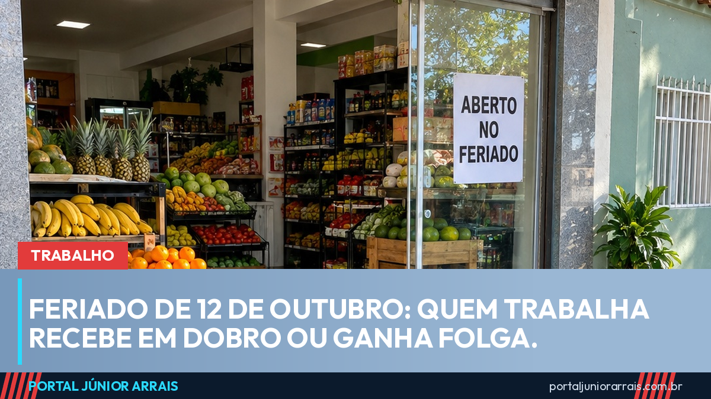

Feriado de 12 de outubro: quem trabalha recebe em dobro ou ganha folga

A próxima segunda-feira, 12 de outubro, é feriado nacional de Nossa Senhora Aparecida, previsto na Lei 6.802/1980. Para muita gente, é fim de semana prolongado. Para quem trabalha em supermercado, farmácia, hospital, portaria ou transporte, é dia de expediente normal. E a lei tem uma regra clara para esse caso: quem trabalha no feriado tem direito a outro dia de folga ou ao pagamento em dobro.
A regra para quem tem carteira assinada
A Lei 605/1949, que trata do repouso semanal remunerado, proíbe o trabalho em feriados, com exceção das atividades que não podem parar. Nessas, o artigo 9º determina que o dia trabalhado seja pago em dobro, a menos que o empregador conceda outro dia de folga para compensar.
O Tribunal Superior do Trabalho tem entendimento firmado na Súmula 146: o trabalho prestado em domingos e feriados, quando não compensado, deve ser pago em dobro, sem prejuízo da remuneração do repouso semanal. Na prática, o dia de 12 de outubro já está incluído no salário do mês; quem trabalha nele sem folga compensatória recebe o valor do dia trabalhado duas vezes, além disso.
Casos que funcionam diferente
- Trabalhadora doméstica: a Lei Complementar 150/2015 repete a regra. O trabalho em feriado que não for compensado com outra folga é pago em dobro. O portal já reuniu os direitos da trabalhadora doméstica;
- Escala 12x36: pela CLT, o salário mensal dessa escala já abrange os feriados, que são considerados compensados. Por isso, em regra, não há pagamento em dobro, a não ser que a convenção coletiva da categoria preveja outra coisa;
- Comércio: desde julho, a abertura de lojas e supermercados no feriado depende de autorização em convenção coletiva, como explicamos na matéria sobre a nova regra do comércio em feriados. A convenção também costuma definir valores e folgas extras, que valem junto com a lei.
O que conferir no contracheque
O pagamento do feriado trabalhado aparece no contracheque do mês seguinte, normalmente como "feriado trabalhado" ou "domingos e feriados". Se o dia não foi pago e também não virou folga em outro dia, há diferença a receber. Vale guardar o registro de ponto ou anotar o horário trabalhado.
Cuidado com golpe
Feriado prolongado costuma vir acompanhado de mensagem falsa sobre "bônus do feriado", "abono de outubro" ou "consulta de valores do trabalhador", pedindo CPF, senha do banco ou Pix para liberar dinheiro. Nenhum órgão público paga bônus de feriado nem cobra taxa para liberar valor trabalhista.
Se o seu feriado trabalhado não aparece no contracheque há meses, procure um profissional de sua confiança para conferir o que está faltando e o que pode ser cobrado.
Conteúdo informativo — não substitui orientação individualizada sobre o seu caso.
Júnior Arrais · Editor do Portal Júnior Arrais
Comunicador de Ubá (MG). Escreve todos os dias sobre benefícios sociais, INSS, trabalho e economia do dia a dia, a partir do Diário Oficial, de portarias e de fontes oficiais, em linguagem simples. Conheça a linha editorial e a política de correções do portal.